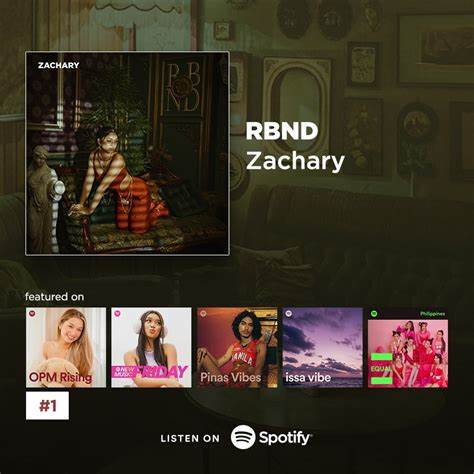
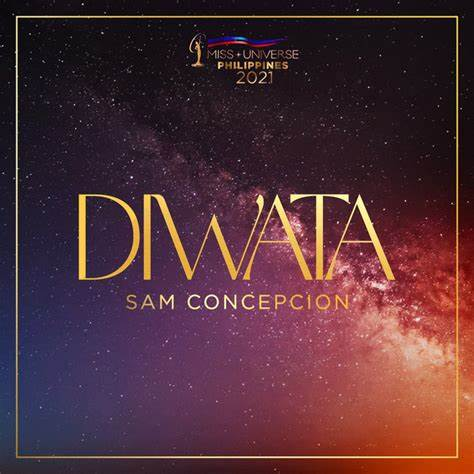

Electronic

Artist: RBND
Song: Zachary
Album: Single
Song Info: "RBND" by Zachary is a Filipino rap song about resilience and proving oneself despite challenges. It features hard-hitting lyrics and a powerful beat, highlighting perseverance and ambition.

Artist: Sam Conception
Song: Diwata
Album: Single
Song Info: "Diwata" by Sam Concepcion is a catchy OPM pop-R&B track with a dreamy and playful vibe, celebrating beauty and enchantment, like a goddess or "diwata" in Filipino mythology.

Artist: Arvey
Song: Dalaga
Album: Single
Song Info: "Dalaga" by Arvey is a viral Filipino rap song that praises a woman's beauty with smooth flows and a chill beat.